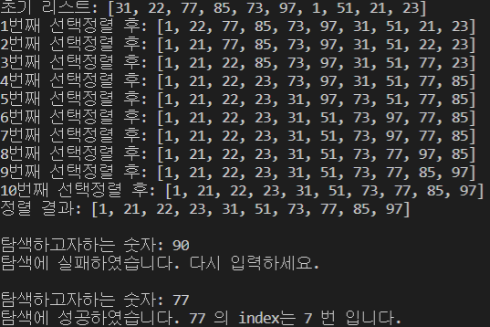

영문 타자연습
가위바위보 포인트게임
베스킨라빈스31 게임
선택정렬과 이진탐색
다항함수 적분계산기
우주 모험 게임
(1) 설명
1부터 100까지의 자연수 중 10개의 리스트로 구성된 초기 리스트를 생성한다. 이때 숫자간의 중복이 일어나지 않도록 난수가 생성될때마다 중복 여부를 확인하였다.
선택정렬을 하고 두 숫자간의 정렬이 끝날 때마다 정렬된 리스트의 결과를 출력한다.
탐색할 숫자를 입력하고, 이진탐색을 통해 숫자가 리스트의 어느 index에 위치하는지를 출력한다.
(2) 실행결과

(3) 코드
import random list1 = [] count = 1 list1.append(random.randint(1, 100)) while(True): num = random.randint(1, 100) flag = 1 for i in range(len(list1)): if (num == list1[i]): flag = 0 break if (flag): list1.append(num) count += 1 if (count >= 10): break print("초기 리스트:", list1) for i in range(0, 10, 1): min = i for j in range(i+1, 10, 1): if list1[j] < list1[min]: min = j temp = list1[i] list1[i] = list1[min] list1[min] = temp print("%d번째 선택정렬 후:"%(i+1), list1) print("정렬 결과:", list1) print("") key = int(input("탐색하고자하는 숫자: ")) def search(key): flag = 0 low = 0 high = 9 for i in range(0, 10, 1): if low <= high: mid = int((low+high)/2) if key == list1[mid]: flag = 1 break elif key < list1[mid]: high = mid - 1 else: low = mid + 1 if (flag == 1): print("탐색에 성공하였습니다.", key, "의 index는", mid,"번 입니다.") return flag else: print("탐색에 실패하였습니다. 다시 입력하세요.\n",) return flag while(True): result = search(key) if(result): break else: key = int(input("탐색하고자하는 숫자: "))